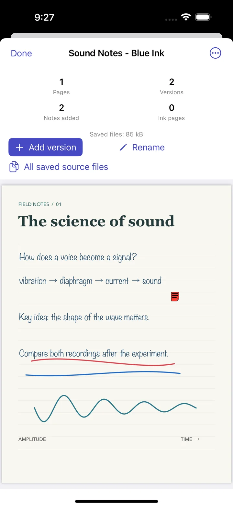
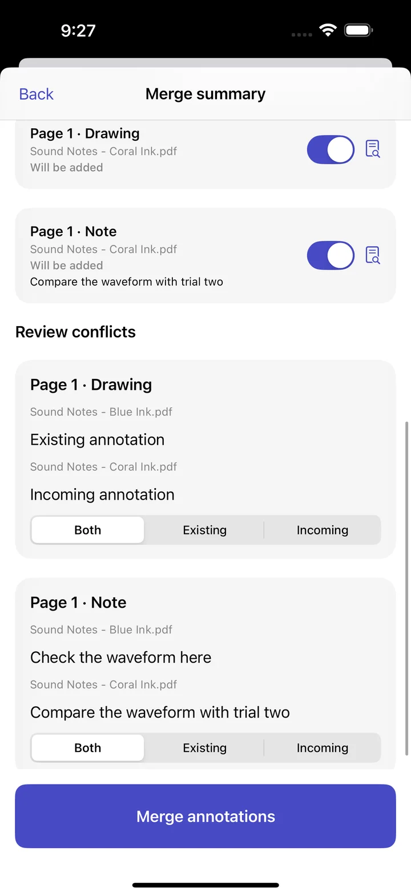
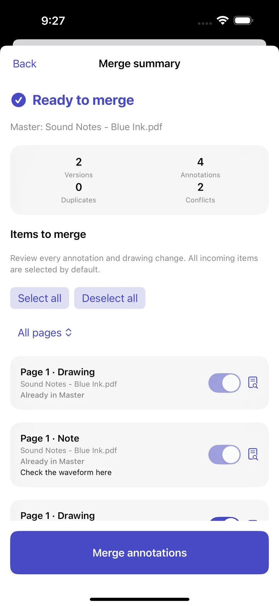
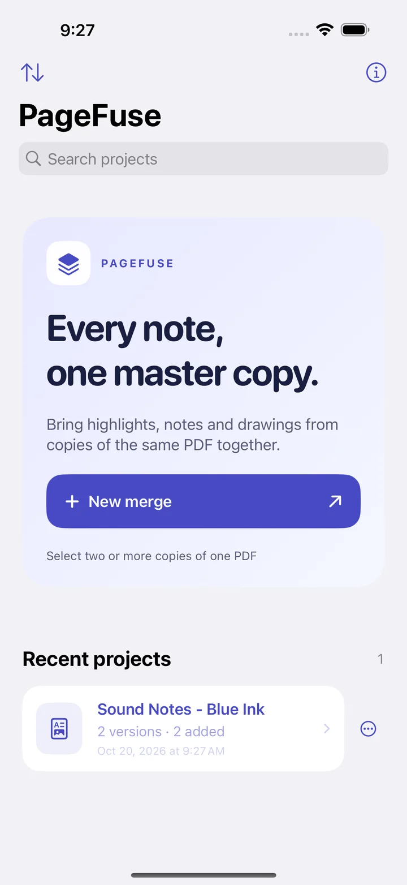

Every note. One master copy.
Bring highlights, handwritten notes and drawings from separately annotated copies of the same PDF into one document you can review and keep updating.

Made for annotated copies
PageFuse solves a focused problem: reconciling changes made to different copies of one PDF.
Find what changed
Compare standard PDF notes, highlights and drawings across selected versions; identify new marks and duplicates.
Choose through conflicts
Inspect overlapping changes by page and keep both annotations, the existing one or the incoming one.
Build a reviewable Master
Preview the merged PDF, save the project and export the Master through the system share sheet.
Preserve supported pen marks
Confirm copies share the same source document, then preserve supported embedded pen marks as page content.
Continue later
Add more copies to a saved project, inspect source files, resume an unfinished merge or restore an earlier Master.
Work on your device
Choose PDFs with Apple's Files picker. PageFuse keeps project copies and history in local app storage.
From copies to one Master
Select matching PDFs
Import two or more annotated copies of the same document through Files.
Review the differences
Inspect new annotations and conflicts, preview affected pages and make your choices.
Save and export
Create the Master, keep its revision history and export when ready.
See PageFuse in action
These are real app captures using original sound study notes with blue and coral handwriting. Switch languages to see the localized interface.



Privacy
PageFuse needs no account. The current app does not send PDF contents, project names or analytics to a PageFuse server. Exports and shares go only to destinations you choose.
Support
Questions about importing, reviewing or exporting? Email us with your app version, device model and the steps to reproduce the issue. Avoid including sensitive PDFs.